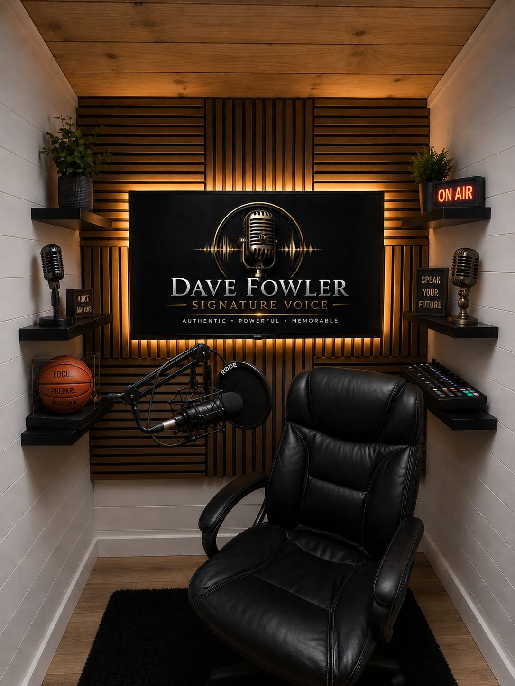

RØDE Procaster
Dynamic broadcast microphone designed specifically for voice, delivering a rich, controlled sound with excellent rejection of background noise.
Dave records from a dedicated, acoustically treated voice studio in Fort Walton Beach, Florida—designed for clean, controlled audio, focused performance and dependable client delivery.

The compact studio combines acoustic treatment, close-mic control and a streamlined recording workflow so every session can stay centered on performance—not distractions.
Wood-slat absorption, controlled surfaces and a dedicated recording position help reduce unwanted reflections.
A close, controlled signal path captures warmth, authority and detail while minimizing room noise.
Closed-back studio headphones support careful performance review, editing and quality control.
Projects are organized for clean editing, requested file specifications and dependable delivery.
A professional setup selected for spoken-word clarity, reliable performance and clean production.
Dynamic broadcast microphone designed specifically for voice, delivering a rich, controlled sound with excellent rejection of background noise.
Professional USB audio interface providing dependable conversion, clean gain staging and a flexible recording signal path.
80-ohm closed-back studio headphones used for detailed monitoring, editing decisions and final quality checks.
A suspended close-mic setup helps isolate handling noise, manage plosives and maintain consistent microphone placement.
Strategic acoustic slats and controlled room surfaces create a focused environment for clean spoken-word recording.
Files can be prepared to client specifications, with remote direction by Zoom or another agreed platform when requested.
Every project begins with a clear understanding of the audience, usage, tone and technical requirements. The recording workflow is designed to provide polished, dependable audio without overcomplicating the process.
Clean spoken-word recording prepared for commercial, corporate, ministry and narrative production.
WAV or MP3 delivery, naming conventions, sample-rate requirements and timing can be included in the project brief.
Live-directed session options can be arranged when the project benefits from real-time collaboration.
Delivery dates, revision expectations and usage details are established before recording begins.
Share your preferred file format, sample rate, timing, delivery deadline, live-direction needs and any production specifications.
Contact Dave